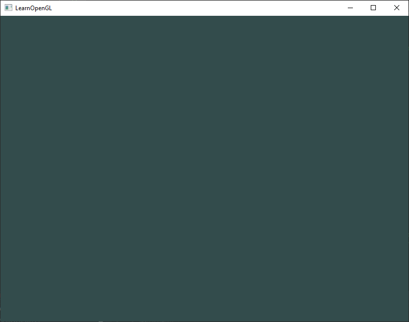

Merhaba Pencere! (Hello Window) 🖥️
Önceki bölümlerde GLFW ve GLAD kütüphanelerimizi projemize başarıyla bağladık. Şimdi sıra, modern grafik programlama dünyasının meşhur ilk adımını atmaya geldi: Kendi ilk penceremizi ekranda açmak ve render döngümüzü kurmak!
Hemen C++ projenizde yeni bir .cpp dosyası (örneğin main.cpp) oluşturun ve dosyanın en üstüne şu başlıkları ekleyin:
Unutmayın: GLAD Her Zaman İlk Sırada!
Bölüm 2'de de vurguladığımız gibi, #include <glad/glad.h> satırı her zaman #include <GLFW/glfw3.h> satırından ÖNCE gelmelidir. Çünkü GLAD, arka planda gerekli olan temel OpenGL başlıklarını (GL/gl.h gibi) sisteme dahil eder.
GLFW'yi Başlatma ve Yapılandırma
Kodumuzun kalbi olan main fonksiyonumuzu yazmaya başlayalım. İlk olarak GLFW kütüphanesini ayağa kaldırmalı ve penceremizin hangi OpenGL standartlarını kullanacağını belirtmeliyiz:
int main()
{
// 1. GLFW'yi başlat
glfwInit();
// 2. Kullanacağımız OpenGL sürümünü bildir (OpenGL 3.3)
glfwWindowHint(GLFW_CONTEXT_VERSION_MAJOR, 3);
glfwWindowHint(GLFW_CONTEXT_VERSION_MINOR, 3);
// 3. Çekirdek Profil (Core-profile) kullanacağımızı belirt
glfwWindowHint(GLFW_OPENGL_PROFILE, GLFW_OPENGL_CORE_PROFILE);
#ifdef __APPLE__
// macOS işletim sistemine özel ileriye dönük uyumluluk ayarı
glfwWindowHint(GLFW_OPENGL_FORWARD_COMPAT, GL_TRUE);
#endif
return 0;
}
Burada kullandığımız glfwWindowHint fonksiyonu, GLFW'ye oluşturacağımız pencere ve OpenGL bağlamı hakkında "ipuçları" (ayarlar) verir.
* İlk argüman değiştirmek istediğimiz özelliği,
* İkinci argüman ise bu özelliğe atayacağımız değeri temsil eder.
Biz ana sürümü (MAJOR) 3, alt sürümü (MINOR) 3 yaparak OpenGL 3.3 standardını hedeflediğimizi bildirdik. Ayrıca profili GLFW_OPENGL_CORE_PROFILE seçerek, eski ve verimsiz fonksiyonlara ihtiyacımız olmadığını ve modern çekirdek mimariyle çalışmak istediğimizi açıkça belirttik.
Pencere Nesnesini Oluşturma
Sıra işletim sisteminden gerçek bir pencere talep etmeye geldi:
GLFWwindow* window = glfwCreateWindow(800, 600, "LearnOpenGL TR", NULL, NULL);
if (window == NULL)
{
std::cout << "GLFW penceresi oluşturulamadı!" << std::endl;
glfwTerminate();
return -1;
}
glfwMakeContextCurrent(window);
glfwCreateWindowfonksiyonu sırasıyla: Pencere genişliği (800 px), yüksekliği (600 px), pencere başlığı ("LearnOpenGL TR") ve iki adet monitör/paylaşım parametresi alır (tam ekran istemediğimiz için şimdilikNULL).- Fonksiyon bize bir
GLFWwindow*işaretçisi döndürür. Eğer bir şeyler ters giderse (örneğin donanım OpenGL 3.3 desteklemiyorsa) işaretçiNULLdöner; bu durumu birifkontrolüyle yakalayıp GLFW'yi güvenle kapatıyoruz. - Son olarak
glfwMakeContextCurrent(window)çağrısı yaparak, az önce oluşturduğumuz bu pencerenin OpenGL bağlamını, programımızın çalıştığı ana iş parçacığının (thread) geçerli bağlamı haline getiriyoruz.
GLAD'i Başlatma
Bölüm 2'de konuştuğumuz gibi, OpenGL fonksiyonlarının adreslerini çalışma zamanında işletim sisteminden çekmek zorundayız. Artık geçerli bir pencere bağlamımız olduğuna göre, GLAD'e bu fonksiyon işaretçilerini yükleme emrini verebiliriz:
if (!gladLoadGLLoader((GLADloadproc)glfwGetProcAddress))
{
std::cout << "GLAD başlatılamadı!" << std::endl;
return -1;
}
Burada glfwGetProcAddress fonksiyonunu GLAD'e parametre olarak geçiriyoruz. GLFW, çalıştığı işletim sistemine (Windows, Linux, macOS) göre fonksiyonların bellekteki adresini nasıl bulacağını çok iyi bilir; GLAD de bu sayede tüm modern OpenGL fonksiyon işaretçilerini bizim için otomatik olarak bağlar.
Görünüm Alanı (Viewport)
OpenGL üzerinde çizim yapmaya başlamadan önce, çizim alanımızın boyutlarını OpenGL'e bildirmeliyiz:
glViewport fonksiyonunun ilk iki parametresi pencerenin sol-alt köşesinin koordinatlarını (0, 0), son iki parametresi ise render penceresinin genişlik ve yüksekliğini (800, 600) belirler.
Arka planda OpenGL, (-1) ile 1 arasındaki Normalleştirilmiş Cihaz Koordinatlarını (NDC) bu görünüm alanını kullanarak penceremizdeki piksel koordinatlarına dönüştürür. Örneğin (-0.5, 0.5) koordinatındaki bir nokta, ekranda (200, 450) pikseline eşlenir.
Pencere Boyutlandırma Geri Çağrısı (Callback)
Kullanıcı penceremizi kenarlarından tutup yeniden boyutlandırdığında, görünüm alanının da otomatik olarak güncellenmesini isteriz. Bunu GLFW'nin Geri Çağrı (Callback) fonksiyonu ile çözeriz:
void framebuffer_size_callback(GLFWwindow* window, int width, int height)
{
glViewport(0, 0, width, height);
}
Ardından main fonksiyonu içinde GLFW'ye bu fonksiyonu kaydederiz:
Artık kullanıcı pencereyi ne kadar büyütür ya da küçültürse küçültsün, OpenGL çizim alanını anında yeni boyutlara uyarlayacaktır!
Render Döngüsü (The Render Loop)
Eğer programımızı bu haliyle çalıştırırsak ne olur? Pencere saliseler içinde açılır ve main fonksiyonu sona erdiği için anında kapanır!
Penceremizin ekranda kalmasını ve biz kapatana kadar sürekli çizim yapmasını isteriz. İşte bu yüzden bir Render Döngüsü (Render Loop) kurarız:
while (!glfwWindowShouldClose(window))
{
// 1. Kullanıcı girdilerini kontrol et
processInput(window);
// 2. Çizim / Render komutları buraya gelecek...
// 3. Tamponları değiştir ve olayları dinle
glfwSwapBuffers(window);
glfwPollEvents();
}
glfwWindowShouldClose: Her turun başında pencereye kapatma emri (kırmızı çarpı butonu gibi) verilip verilmediğini kontrol eder.glfwPollEvents: Klavye tuşları, fare hareketleri veya pencere olayları gibi durumları kontrol eder ve ilgili geri çağırma fonksiyonlarını tetikler.glfwSwapBuffers: Çift Tamponlama (Double Buffering) mekanizmasını yürütür.
Çift Tamponlama (Double Buffering) Nedir?
Bir uygulamanın tek bir tampon üzerinde çizim yapması ekranda titremelere ve görüntü yırtılmalarına (screen tearing) sebep olur; çünkü pikseller ekranda çizilirken kullanıcı yarım kalmış görüntüleri görür.
Bunu önlemek için iki tampon kullanılır:
* Ön Tampon (Front Buffer): O anda ekranda kullanıcıya gösterilen tamamlanmış resimdir.
* Arka Tampon (Back Buffer): Ekran kartının arkada bir sonraki kareyi sessizce çizdiği alandır.
Çizim bittiğinde glfwSwapBuffers ile iki tampon anında yer değiştirir (Swap) ve kullanıcı her zaman pürüzsüz, bitmiş bir görüntü görür!
Kullanıcı Girdilerini Yakalama (Input)
Kullanıcının klavyeden bir tuşa (örneğin ESC tuşuna) bastığında uygulamadan çıkmasını sağlamak son derece basittir. Ayrı bir fonksiyon yazalım:
void processInput(GLFWwindow *window)
{
if (glfwGetKey(window, GLFW_KEY_ESCAPE) == GLFW_PRESS)
glfwSetWindowShouldClose(window, true);
}
Burada glfwGetKey, ilgili tuşa basılıp basılmadığını sorgular. Eğer kullanıcı ESC tuşuna basmışsa, glfwSetWindowShouldClose ile pencerenin kapatılması gerektiği bayrağını true yaparız ve döngü bir sonraki turda sonlanır.
Ekranı Temizleme ve Renklendirme 🎨
Her yeni render karesine başlarken ekranı bir önceki kareden kalan artıklardan temizlemek isteriz.
Bölüm 1'de öğrendiğimiz Durum Makinesi modelini hatırlayın: 1. Önce ekranı temizlerken hangi rengi kullanmak istediğimizi belirleriz (Durum Değiştirici), 2. Ardından ekranı temizleme emrini veririz (Durum Kullanıcı):
glClearColor, kırmızı (0.2), yeşil (0.3), mavi (0.3) ve alfa (1.0) değerleriyle koyu bir petrol yeşili / turkuaz tonunu aktif temizleme rengi yapar. glClear ise mevcut renk tamponunu (GL_COLOR_BUFFER_BIT) bu renkle tamamen doldurur.
Temiz Kapanış (Cleanup)
Render döngüsü bittiğinde, işletim sistemine ayırdığımız tüm kaynakları iade etmeliyiz:
Eksiksiz Çalışan C++ Kaynak Kodu 🚀
Tüm bu parçaları bir araya getirdiğimizde ortaya çıkan eksiksiz ve çalışan ilk programımız:
#include <glad/glad.h>
#include <GLFW/glfw3.h>
#include <iostream>
// Fonksiyon prototipleri
void framebuffer_size_callback(GLFWwindow* window, int width, int height);
void processInput(GLFWwindow *window);
// Ayarlar
const unsigned int SCR_WIDTH = 800;
const unsigned int SCR_HEIGHT = 600;
int main()
{
// 1. GLFW'yi başlat ve yapılandır
glfwInit();
glfwWindowHint(GLFW_CONTEXT_VERSION_MAJOR, 3);
glfwWindowHint(GLFW_CONTEXT_VERSION_MINOR, 3);
glfwWindowHint(GLFW_OPENGL_PROFILE, GLFW_OPENGL_CORE_PROFILE);
#ifdef __APPLE__
glfwWindowHint(GLFW_OPENGL_FORWARD_COMPAT, GL_TRUE);
#endif
// 2. Pencere nesnesini oluştur
GLFWwindow* window = glfwCreateWindow(SCR_WIDTH, SCR_HEIGHT, "LearnOpenGL TR", NULL, NULL);
if (window == NULL)
{
std::cout << "GLFW penceresi olusturulamadi!" << std::endl;
glfwTerminate();
return -1;
}
glfwMakeContextCurrent(window);
glfwSetFramebufferSizeCallback(window, framebuffer_size_callback);
// 3. GLAD fonksiyon işaretçilerini yükle
if (!gladLoadGLLoader((GLADloadproc)glfwGetProcAddress))
{
std::cout << "GLAD baslatilamadi!" << std::endl;
return -1;
}
// 4. Render Döngüsü
while (!glfwWindowShouldClose(window))
{
// Girdileri kontrol et
processInput(window);
// Render komutları: Ekranı temizle ve renklendir
glClearColor(0.2f, 0.3f, 0.3f, 1.0f);
glClear(GL_COLOR_BUFFER_BIT);
// Tamponları değiştir ve olayları işle
glfwSwapBuffers(window);
glfwPollEvents();
}
// 5. Kaynakları temizle ve çık
glfwTerminate();
return 0;
}
// Pencere boyutu değiştiğinde çalışan geri çağırma fonksiyonu
void framebuffer_size_callback(GLFWwindow* window, int width, int height)
{
glViewport(0, 0, width, height);
}
// Klavye girdilerini işleyen fonksiyon
void processInput(GLFWwindow *window)
{
if (glfwGetKey(window, GLFW_KEY_ESCAPE) == GLFW_PRESS)
glfwSetWindowShouldClose(window, true);
}
Bu kodu derleyip çalıştırdığınızda (Visual Studio'da F5), karşınızda şu büyüleyici ilk pencereniz belirecektir:

Pencereyi kenarlarından büyütüp küçültebilir ve klavyeden ESC tuşuna basarak penceremizi zarifçe kapatabilirsiniz.
Tebrikler! 🥂
Modern grafik programlama dünyasının en kritik eşiklerinden birini aştınız: Artık çalışan bir pencereniz, aktif bir OpenGL bağlamınız ve canlı bir render döngünüz var!
Bir sonraki bölümde, grafik dünyasının "atomu" kabul edilen üçgeni GPU belleğine gönderecek (VBO, VAO), ilk Vertex ve Fragment Shader programlarımızı yazacak ve ekranda ilk şeklimizi çizeceğiz!